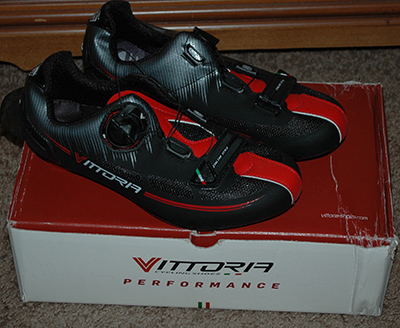
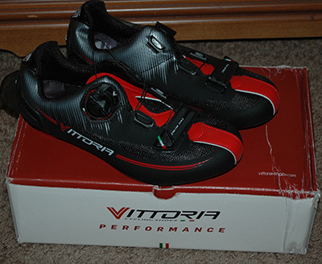

What to buy?
Too many people decide to start bicycling without really knowing what kind of bicycle they require. Don't be one of these people.
Before you rush out to buy a new or used bicycle ask yourself these three question.
- Where are you going to ride?
- Who will you be riding with?
- How do you want to ride and/or Is there a specific event that you need the bike to participate in?